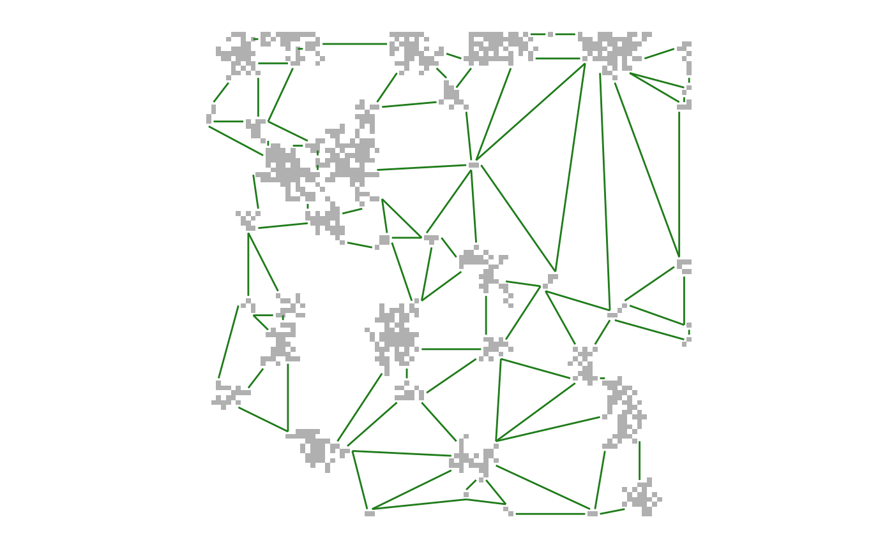
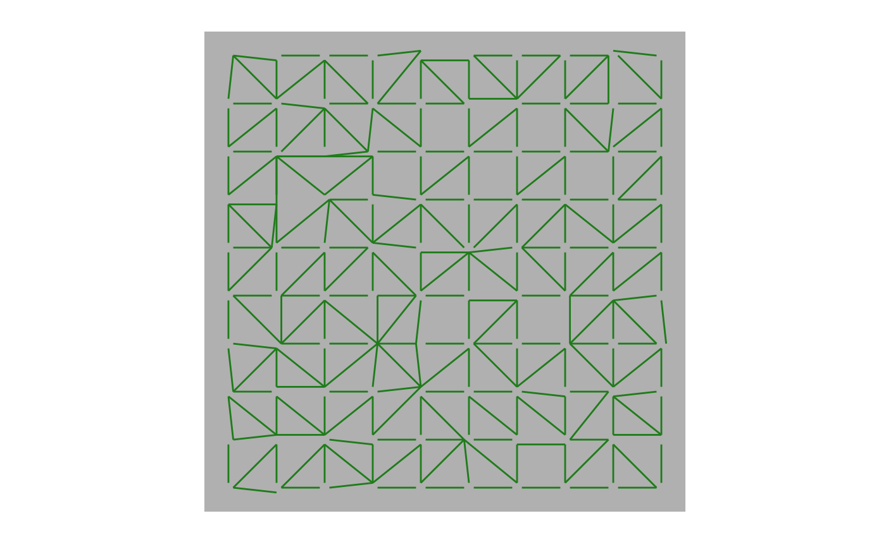

R/MPG.R
MPG.RdExtracts a minimum planar graph (MPG) and is also the first step in grains of connectivity (GOC) modelling. Both patch-based and lattice MPGs can be extracted.
MPG(cost, patch, ...) # S4 method for RasterLayer,RasterLayer MPG(cost, patch, ...) # S4 method for RasterLayer,numeric MPG(cost, patch, ...)
| cost | A |
|---|---|
| patch | A raster of class |
| ... | Additional arguments (not used). |
A mpg object.
Use this function to create a minimum planar graph (MPG) that can be
further analyzed using igraph routines.
It is also the first step in grains of connectivity (GOC) modelling.
Researchers should consider whether the use of a patch-based MPG or a lattice MPG model is appropriate based on the patch-dependency of the organism under study. Patch-based models make most sense when animals are restricted to, or dependent on, a resource patch. Lattice models can be used as a generalized and functional approach to scaling resistance surfaces.
Rasters should be projected and not in geographic coordinates (i.e. projection(cost)
should not contain "+proj=longlat") or the function will issue a warning.
In unprojected cases consider using projectRaster to change to an appropriate
coordinate system for the location and extent of interest that balances both distance and areal
accuracy. See http://www.spatialreference.org for location-specific suggestions.
Use of geographic coordinates will result in inaccurate areal and distance measurements,
rendering the models themselves inaccurate.
Fall, A., M.-J. Fortin, M. Manseau, D. O'Brien. (2007) Spatial graphs: Principles and applications for habitat connectivity. Ecosystems 10:448:461.
Galpern, P., M. Manseau. (2013a) Finding the functional grain: comparing methods for scaling resistance surfaces. Landscape Ecology 28:1269-1291.
Galpern, P., M. Manseau. (2013b) Modelling the influence of landscape connectivity on animal distribution: a functional grain approach. Ecography 36:1004-1016.
Galpern, P., M. Manseau, A. Fall. (2011) Patch-based graphs of landscape connectivity: a guide to construction, analysis, and application for conservation. Biological Conservation 144:44-55.
Galpern, P., M. Manseau, P.J. Wilson. (2012) Grains of connectivity: analysis at multiple spatial scales in landscape genetics. Molecular Ecology 21:3996-4009.
library(raster)#>#> #>#> #> #>## Load raster landscape tiny <- raster(system.file("extdata/tiny.asc", package = "grainscape")) ## Create a resistance surface from a raster using an is-becomes reclassifyification tinyCost <- reclassify(tiny, rcl = cbind(c(1, 2, 3, 4), c(1, 5, 10, 12))) ## Produce a patch-based MPG where patches are resistance features=1 tinyPatchMPG <- MPG(cost = tinyCost, patch = (tinyCost == 1)) ## Explore the graph structure and node/link attributes graphdf(tinyPatchMPG)#> [[1]] #> [[1]]$v #> name patchId patchArea patchEdgeArea coreArea centroidX centroidY #> 1 5 5 38 37 1 8.684211 95.157895 #> 2 7 7 30 28 2 19.700000 98.000000 #> 3 8 8 46 45 1 43.847826 96.021739 #> 4 9 9 61 58 3 60.795082 96.811475 #> 5 12 12 1 1 0 71.500000 99.500000 #> 6 14 14 65 64 1 84.084615 96.346154 #> 7 19 19 9 9 0 98.944444 95.055556 #> 8 22 22 7 7 0 20.214286 94.642857 #> 9 28 28 14 14 0 51.642857 86.714286 #> 10 29 29 2 2 0 99.000000 88.000000 #> 11 30 30 100 95 5 31.660000 74.740000 #> 12 31 31 4 4 0 98.750000 84.750000 #> 13 32 32 4 4 0 3.000000 83.000000 #> 14 37 37 11 11 0 12.045455 79.954545 #> 15 40 40 7 7 0 24.071429 76.500000 #> 16 41 41 72 67 5 18.680556 70.902778 #> 17 46 46 2 2 0 56.000000 72.500000 #> 18 48 48 32 32 0 26.593750 60.875000 #> 19 50 50 9 9 0 10.500000 61.166667 #> 20 54 54 5 5 0 37.700000 56.700000 #> 21 55 55 4 4 0 47.500000 57.250000 #> 22 56 56 39 39 0 58.448718 50.782051 #> 23 60 60 6 6 0 98.500000 51.666667 #> 24 61 61 4 4 0 71.500000 48.750000 #> 25 62 62 14 14 0 19.000000 43.214286 #> 26 64 64 4 4 0 10.750000 43.500000 #> 27 67 67 76 72 4 40.171053 37.276316 #> 28 68 68 4 4 0 85.000000 42.250000 #> 29 73 73 1 1 0 99.500000 39.500000 #> 30 74 74 32 32 0 17.125000 35.312500 #> 31 76 76 15 15 0 60.166667 34.766667 #> 32 78 78 2 2 0 99.000000 36.000000 #> 33 80 80 21 21 0 78.404762 31.166667 #> 34 84 84 18 18 0 6.555556 24.944444 #> 35 85 85 12 12 0 42.833333 25.500000 #> 36 86 86 55 55 0 86.063636 21.445455 #> 37 93 93 42 39 3 24.285714 14.190476 #> 38 95 95 31 31 0 55.919355 11.725806 #> 39 100 100 26 26 0 90.038462 3.807692 #> 40 103 103 1 1 0 54.500000 4.500000 #> 41 105 105 2 2 0 63.000000 1.000000 #> 42 106 106 2 2 0 35.000000 0.500000 #> 43 107 107 2 2 0 80.000000 0.500000 #> #> [[1]]$e #> e1 e2 linkId lcpPerimWeight startPerimX startPerimY endPerimX endPerimY #> 1 62 74 1 12 17.5 41.5 17.5 40.5 #> 2 30 41 2 12 24.5 72.5 24.5 71.5 #> 3 30 40 3 10 24.5 75.5 24.5 74.5 #> 4 7 22 4 10 20.5 96.5 21.5 96.5 #> 5 5 7 5 5 11.5 98.5 12.5 98.5 #> 6 80 86 6 10 82.5 28.5 81.5 28.5 #> 7 73 78 7 15 99.5 37.5 99.5 38.5 #> 8 29 31 8 10 98.5 85.5 98.5 86.5 #> 9 19 29 9 10 99.5 89.5 99.5 90.5 #> 10 67 85 10 20 42.5 28.5 42.5 30.5 #> 11 41 48 11 20 22.5 63.5 22.5 64.5 #> 12 40 41 12 20 19.5 76.5 21.5 76.5 #> 13 37 41 13 20 14.5 76.5 14.5 77.5 #> 14 8 28 14 25 48.5 92.5 50.5 90.5 #> 15 9 12 15 20 67.5 99.5 70.5 99.5 #> 16 12 14 16 30 76.5 99.5 72.5 99.5 #> 17 30 48 17 40 33.5 63.5 29.5 62.5 #> 18 8 9 18 32 53.5 94.5 50.5 95.5 #> 19 48 54 19 35 30.5 56.5 35.5 55.5 #> 20 95 103 20 40 54.5 5.5 56.5 7.5 #> 21 62 64 21 44 11.5 41.5 15.5 41.5 #> 22 5 22 22 40 12.5 93.5 18.5 93.5 #> 23 32 37 23 50 3.5 81.5 9.5 81.5 #> 24 74 84 24 40 10.5 26.5 13.5 30.5 #> 25 55 56 25 45 52.5 53.5 49.5 57.5 #> 26 5 32 26 45 3.5 85.5 6.5 89.5 #> 27 9 28 27 40 52.5 88.5 55.5 92.5 #> 28 68 80 28 45 83.5 40.5 80.5 35.5 #> 29 14 19 29 45 96.5 96.5 90.5 94.5 #> 30 30 54 30 50 38.5 58.5 37.5 65.5 #> 31 5 37 31 45 12.5 90.5 12.5 82.5 #> 32 54 55 32 50 39.5 57.5 45.5 57.5 #> 33 64 74 33 52 11.5 41.5 14.5 38.5 #> 34 86 100 34 55 89.5 7.5 89.5 15.5 #> 35 100 107 35 54 86.5 1.5 81.5 0.5 #> 36 41 50 36 55 11.5 70.5 12.5 63.5 #> 37 56 76 37 64 58.5 37.5 58.5 45.5 #> 38 56 61 38 59 69.5 47.5 62.5 48.5 #> 39 103 105 39 65 62.5 2.5 54.5 3.5 #> 40 9 14 40 60 77.5 94.5 68.5 94.5 #> 41 95 105 41 75 58.5 7.5 62.5 2.5 #> 42 67 76 42 75 45.5 34.5 57.5 34.5 #> 43 55 67 43 75 45.5 44.5 47.5 55.5 #> 44 56 67 44 75 53.5 50.5 45.5 44.5 #> 45 8 30 45 76 36.5 85.5 40.5 91.5 #> 46 14 29 46 75 98.5 88.5 87.5 91.5 #> 47 74 93 47 80 18.5 31.5 18.5 17.5 #> 48 7 8 48 70 25.5 97.5 38.5 97.5 #> 49 28 46 49 81 54.5 83.5 55.5 73.5 #> 50 37 40 50 80 22.5 77.5 14.5 81.5 #> 51 86 107 51 85 80.5 1.5 82.5 13.5 #> 52 93 106 52 85 31.5 13.5 34.5 1.5 #> 53 84 93 53 80 8.5 22.5 18.5 17.5 #> 54 30 55 54 85 37.5 65.5 45.5 57.5 #> 55 85 95 55 85 45.5 23.5 52.5 15.5 #> 56 14 31 56 85 97.5 85.5 87.5 91.5 #> 57 22 37 57 85 19.5 92.5 14.5 81.5 #> 58 60 73 58 88 98.5 49.5 98.5 39.5 #> 59 54 67 59 95 39.5 56.5 43.5 44.5 #> 60 76 85 60 95 46.5 25.5 56.5 32.5 #> 61 50 64 61 105 10.5 58.5 10.5 45.5 #> 62 28 30 62 107 37.5 84.5 48.5 85.5 #> 63 105 107 63 105 78.5 0.5 64.5 0.5 #> 64 32 41 64 100 13.5 74.5 2.5 80.5 #> 65 85 93 65 105 40.5 23.5 30.5 14.5 #> 66 30 46 66 100 36.5 71.5 54.5 72.5 #> 67 68 78 67 114 84.5 40.5 98.5 36.5 #> 68 103 106 68 115 35.5 1.5 54.5 3.5 #> 69 93 95 69 115 31.5 13.5 51.5 12.5 #> 70 60 68 70 130 86.5 44.5 96.5 51.5 #> 71 76 95 71 123 61.5 32.5 60.5 15.5 #> 72 68 73 72 129 98.5 39.5 87.5 43.5 #> 73 61 68 73 123 70.5 46.5 83.5 42.5 #> 74 48 50 74 135 12.5 59.5 22.5 60.5 #> 75 64 84 75 125 8.5 43.5 4.5 28.5 #> 76 95 106 76 125 35.5 1.5 51.5 9.5 #> 77 46 55 77 127 46.5 58.5 55.5 71.5 #> 78 46 56 78 132 55.5 71.5 56.5 56.5 #> 79 50 62 79 133 16.5 46.5 10.5 58.5 #> 80 76 80 80 144 75.5 28.5 61.5 32.5 #> 81 67 93 81 146 28.5 15.5 37.5 29.5 #> 82 9 46 82 140 63.5 92.5 56.5 73.5 #> 83 31 60 83 162 97.5 53.5 97.5 83.5 #> 84 61 76 84 200 62.5 36.5 69.5 47.5 #> 85 95 107 85 195 60.5 10.5 79.5 1.5 #> 86 80 95 86 208 76.5 27.5 60.5 15.5 #> 87 86 95 87 208 81.5 20.5 60.5 15.5 #> 88 61 80 88 210 76.5 35.5 70.5 46.5 #> 89 14 46 89 220 56.5 73.5 78.5 93.5 #> 90 14 60 90 290 97.5 53.5 84.5 89.5 #> 91 46 61 91 365 57.5 72.5 72.5 50.5 #> 92 14 68 92 358 81.5 91.5 83.5 42.5 #> 93 14 61 93 432 78.5 93.5 72.5 50.5 #> #>## Find the mean patch area (see igraph manual for use of V() and E()) mean(igraph::V(tinyPatchMPG@mpg)$patchArea)#> [1] 21.67442## Additional graph extraction scenarios ## Produce a lattice MPG where focal points are spaced 10 cells apart tinyLatticeMPG <- MPG(cost = tinyCost, patch = 10) plot(tinyLatticeMPG)